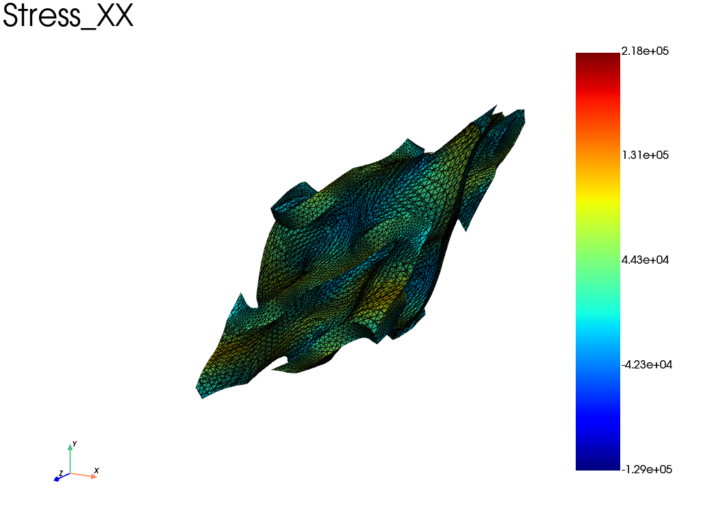

Note
Go to the end to download the full example code.
Off-axis tensile test on a Gyroid unit cell with periodic boundary condition
The periodic mesh of the Gyriod has been generated with microgen. This example show how to define periodic boundary conditions and to load the structure with prescribed strain in local coordinate system. After that, the mean stress and mean strain results are extracted in local and global coordinate system.
import fedoo as fd
import numpy as np
from scipy.spatial.transform import Rotation
# --------------- Pre-Treatment -----------------------------------------------
fd.ModelingSpace("3D")
mesh = fd.Mesh.read("../../util/meshes/gyroid_per.vtk")
# mesh = fd.mesh.box_mesh(2,2,2)
assert mesh.is_periodic()
# Material definition
material = fd.constitutivelaw.ElasticIsotrop(1e5, 0.3)
wf = fd.weakform.StressEquilibrium(material)
# Assembly
assembly = fd.Assembly.create(wf, mesh)
# Define linear problem
pb = fd.problem.Linear(assembly)
# Boundary conditions
# periodic constraint in local frame
local_frame = Rotation.from_rotvec([0, 0, np.pi / 4])
bc_periodic = fd.constraint.PeriodicBC("small_strain", off_axis_rotation=local_frame)
pb.bc.add(bc_periodic)
# block a node near the center to avoid rigid body motion
pb.bc.add("Dirichlet", mesh.nearest_node(mesh.bounding_box.center), "Disp", 0)
# off axis traction along the local x axis = '1'
pb.bc.add("Dirichlet", "E_11", 1)
# Warning: the global strain are eliminated from the problem and are no more
# applicable for BC. For instance: pb.bc.add("Dirichlet", "E_xx", 1) will have
# no effect.
# --------------- Solve -----------------------------------------------------
pb.solve()
print the macroscopic strain tensor and stress tensor
res = pb.get_results(
assembly,
[
"LocalMeanStrain",
"MeanStrain",
"Stress",
"Disp",
"Fext(MeanStrain)", # dual variable associated to strain is: stress * volume
"Fext(LocalMeanStrain)",
],
)
res.plot("Stress", "XX")
np.set_printoptions(3)
mean_strain = res["LocalMeanStrain"].ravel()
# or pb.get_dof_solution("LocalMeanStrain")
print(
"Strain tensor in local frame:\n",
np.array(
[
[mean_strain[0], mean_strain[3], mean_strain[4]],
[mean_strain[3], mean_strain[1], mean_strain[5]],
[mean_strain[4], mean_strain[5], mean_strain[2]],
]
),
" \n\n",
)
mean_strain = res["MeanStrain"].ravel()
# or pb.get_dof_solution("MeanStrain")
print(
"Strain tensor in global frame:\n",
np.array(
[
[mean_strain[0], mean_strain[3], mean_strain[4]],
[mean_strain[3], mean_strain[1], mean_strain[5]],
[mean_strain[4], mean_strain[5], mean_strain[2]],
]
),
" \n\n",
)
volume = mesh.bounding_box.volume # total surface of the domain = volume in 2d
mean_stress = res["Fext(LocalMeanStrain)"].ravel() / volume
# or mean_stress = pb.get_ext_forces("LocalMeanStrain").ravel() / volume
print(
"Stress tensor in local frame:\n",
np.array(
[
[mean_stress[0], mean_stress[3], mean_stress[4]],
[mean_stress[3], mean_stress[1], mean_stress[5]],
[mean_stress[4], mean_stress[5], mean_stress[2]],
]
),
" \n\n",
)
mean_stress = res["Fext(MeanStrain)"].ravel() / volume
# or mean_stress = pb.get_ext_forces("MeanStrain").ravel() / volume
print(
"Stress tensor in global frame:\n",
np.array(
[
[mean_stress[0], mean_stress[3], mean_stress[4]],
[mean_stress[3], mean_stress[1], mean_stress[5]],
[mean_stress[4], mean_stress[5], mean_stress[2]],
]
),
" \n\n",
)
# Compute the mean stress tensor by integration over the domain
# The difference with the previous method is due to numerical errors
mean_stress = [1 / volume * mesh.integrate_field(res["Stress"][i]) for i in range(6)]
print(
"Stress tensor using integration:\n",
np.array(
[
[mean_stress[0], mean_stress[3], mean_stress[4]],
[mean_stress[3], mean_stress[1], mean_stress[5]],
[mean_stress[4], mean_stress[5], mean_stress[2]],
]
),
" \n\n",
)

Strain tensor in local frame:
[[ 1.000e+00 2.697e-04 -4.041e-04]
[ 2.697e-04 -2.385e-01 -4.608e-04]
[-4.041e-04 -4.608e-04 -3.280e-01]]
Strain tensor in global frame:
[[ 3.806e-01 1.238e+00 4.011e-05]
[ 1.238e+00 3.809e-01 -6.116e-04]
[ 4.011e-05 -6.116e-04 -3.280e-01]]
Stress tensor in local frame:
[[ 1.351e+04 9.656e-11 -9.230e-12]
[ 9.656e-11 -2.448e-09 -9.599e-12]
[-9.230e-12 -9.599e-12 5.571e-10]]
Stress tensor in global frame:
[[ 6.756e+03 6.756e+03 1.822e-11]
[ 6.756e+03 6.756e+03 -1.445e-11]
[ 1.822e-11 -1.445e-11 5.571e-10]]
Stress tensor using integration:
[[ 6.756e+03 6.756e+03 -6.207e-11]
[ 6.756e+03 6.756e+03 1.744e-11]
[-6.207e-11 1.744e-11 8.382e-10]]
Total running time of the script: (0 minutes 4.613 seconds)